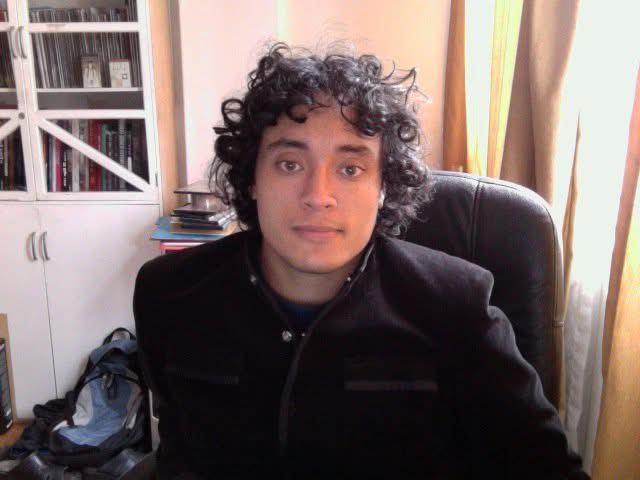

Obra original
Consulta disponibilidad de piezas únicas, colecciones y posibles adquisiciones.
Consultar obras ↗* Fotografías cargadas desde la carpeta img del proyecto. Títulos, atribuciones y disponibilidad comercial pendientes de confirmar con Paolo.

«El arte es una invocación: una forma de dar cuerpo a aquello que no tiene nombre.»
Un universo visual inspirado por el mito, las fuerzas de la naturaleza y las narrativas que habitan entre la luz y la sombra.
Texto conceptual provisional. La biografía definitiva se incorporará cuando Paolo la confirme.
Conocer al artista ↗Para coleccionistas, proyectos editoriales, músicos y marcas que buscan imágenes con una identidad singular.
Consulta disponibilidad de piezas únicas, colecciones y posibles adquisiciones.
Consultar obras ↗Imágenes personalizadas para clientes particulares y proyectos creativos.
Solicitar propuesta ↗Portadas, proyectos musicales, editoriales y colaboraciones visuales.
Iniciar proyecto ↗¿Una obra cautivó tu atención? ¿Tienes una idea que merece convertirse en imagen? Cuéntanos tu proyecto.
En este prototipo el formulario prepara el texto de la consulta. La entrega directa se habilitará cuando Paolo confirme su correo oficial.
Las miniaturas muestran fotografías vinculadas de la colección. Cuando Paolo aporte las imágenes de bocetos y avances, las organizaremos por etapas reales del proceso creativo.
Solicitar obra similar ↗